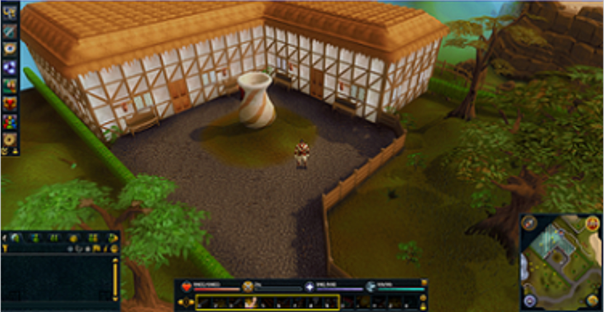
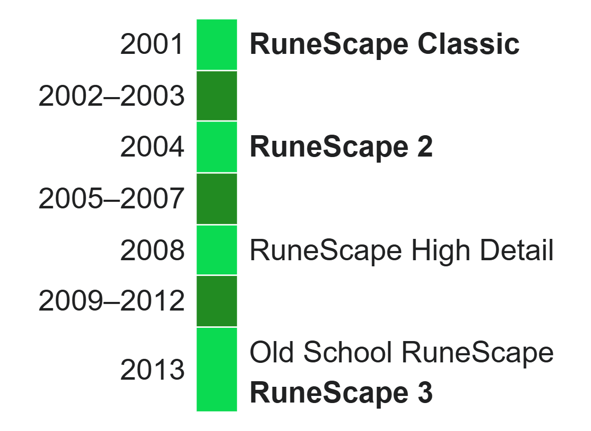

RuneScape is a fantasy massively multiplayer online role-playing game (MMORPG) developed and published by Jagex, released in January 2001. RuneScape was originally a browser game built with the Java programming language; it was largely replaced by a standalone C++ client in 2016. The game has had over 300 million accounts created and was recognised by the Guinness World Records as the largest and most-updated free MMORPG.[2] RuneScape takes place in the world of Gielinor, a medieval fantasy realm divided into different kingdoms, regions, and cities.[3][4] Players can travel throughout Gielinor via a number of methods including on foot, magical spells, or charter ships.[5] Each region offers different types of monsters, resources, and quests to challenge players. The game's fictional universe has been explored through a tie-in video game on another of its maker's websites, FunOrb, Armies of Gielinor,[6] and the novels Betrayal at Falador,[7] Return to Canifis,[8] and Legacy of Blood.[9] Players are represented in the game with customisable avatars. RuneScape does not follow a linear storyline; rather, players set their own goals and objectives. Players can choose to fight non-player character (NPC) monsters, complete quests, or increase their experience in the available skills. Players interact with each other through trading, chatting, or by participating in mini-games and activities, some of which are competitive or combative in nature, while others require cooperative or collaborative play. The first public version of RuneScape was released in January 2001 in beta form, with Jagex as its copyright holder being formed later that year. In 2004, as the game's popularity grew, the game engine was rewritten and released as RuneScape 2,[10] with the original version of the game being renamed RuneScape Classic. The third iteration of the game, known as RuneScape 3, was released in July 2013.[11] Old School RuneScape, a separate, older version of the game dating from August 2007, was released in February 2013, and is maintained alongside the original client. It was announced that mobile ports of both versions of RuneScape would be released for Android and iOS devices in 2018.[12][13] RuneScape was released on Steam on 14 October 2020.[14]
Players begin in a secluded area called Tutorial Island, where they are taken through a tutorial, a set path where they learn the most basic skills in RuneScape.[15][16] After the tutorial, players have access to tutors and advisors located in the towns they explore, who can give players appropriate information about their respective skills.[17] Originally players were teleported to the town of Lumbridge, however in recent updates, Burthorpe is the main starting area.[18] Other main cities include Varrock, Falador, Ardougne (and West Ardougne), and smaller settlements.[19][20][21] Players set their own goals and objectives as they play the game. They can train their in-game skills, engage non-player character (NPC) monsters and other players in combat and complete quests at their discretion.[22] Players interact with each other through trading, chatting or by participating in mini-games.
There are 29 skills in RuneScape, 17 skills available to free-to-play players and an additional 12 for members, which enable players to perform various activities allowing for interaction with NPCs, the environment and other players. Players gain experience points in a skill when they use it. For example, mining an ore trains the mining skill, and when the player accumulates enough experience points in the skill, their character will "level up".[23] As a skill level rises, the ability to retrieve better raw materials and produce better products increases, as does the experience awarded if the player uses new abilities. The total skill level of a player partly symbolises the player's status in the game and subscribers with a high total level can appear on the high scores.[24] Upon reaching the highest available level in a skill, members may buy a special cape to symbolise their achievement.[25] Some skills, such as Woodcutting and Fishing, enable the player to collect raw materials that can be processed into usable items for other skills, such as Fletching and Cooking respectively. The items created can be used by the player or sold to shops and other players. Other skills allow players to kill certain NPCs, build houses, move around the map with greater ease, steal from various NPCs, market stalls and chests located in-game, light fires, cook food, mix potions, craft runestones, armour and weapons, plant crops, hunt NPC animals, raid dungeons, and summon familiars to assist in combat and training skills.[26]
RuneScape features a semi-real-time combat system. Combat is an important aspect of the game, allowing players to defeat monsters to obtain dropped items or to complete quests. A combat level is an indicator of how powerful a player or NPC is in combat. For players, it is determined by applying a mathematical formula to their combat skills.[27] With the release of the Necromancy skill, the current maximum combat level a player can achieve is 152.[28] Players engage in combat by clicking on the enemy they want their character to attack and will automatically continue fighting until they kill their opponent, die, or retreat from the fight. Most of the game's weapons are medieval or fantastical in nature, and feature different strengths and weaknesses. Players may use the Summoning skill to summon a familiar that can assist with combat,[29] use special attacks called "abilities" to deal additional damage,[30] and use potions and the Prayer skill to boost their combat prowess. Combat is subdivided into four main categories: Melee, Magic, Ranged and Necromancy. Melee attacks are close range and combine the Attack, Strength, and Defence skills;[31] Magic attacks focus on using runestones to cast spells;[32] Ranged attacks use projectile weapons like arrows, darts or throwing knives;[33] and Necromancy combines direct necrotic attacks with the conjuration of undead combatants using conduits to fight alongside the player.[28] The first three combat types make up the "combat triangle", which governs effectiveness of styles in a rock-paper-scissors fashion; Melee beats Ranged, Ranged beats Magic, Magic beats Melee, and each style is neutral to itself.[34] Necromancy, released in 2023, is a standalone method of combat and is neutral to the other styles, which have been available since the game's launch.[28] The advantages and disadvantages of the combat triangle apply to both NPCs and player opponents. Players are not required to choose a character class nor are they bound to a specific category of combat. They may freely change between or combine the styles of combat by switching weapons and armour.[citation needed] Combat is governed by a life points system. Every combatant has a maximum capacity of life points, and dies when their health is depleted to 0. Lost life points can be recovered by consuming certain food or drinks, or casting abilities. Players who die reappear at a respawn point of their choice with their life and skill points restored; however, they drop all but three chosen items, as well as certain common items.[27][35] Dying generally spawns a gravestone that will hold all of the player's items and will last for a set time. If the player does not return to their grave in time, the grave will collapse, and lost items must then be reclaimed for a fee or else will disappear.[27][35] In June 2012, players were invited to beta-test a new combat system named "Evolution of Combat",[36] which included fundamental changes such as re-balancing the combat triangle to avoid favouring melee attacks,[37] and replacing special weapon attacks with abilities that produce a range of effects when activated. The system was released on the live game on 20 November 2012.[30] Various polls were also added for players to vote on in game that would determine the result of future content development,[38] some of which would dictate the development of the improved combat system.[39][40] A beta for a separate combat system dubbed "Legacy Mode" was opened to players on 16 June 2014,[41] before being introduced to the live game on 14 July. Legacy Mode allows players to switch to the combat system and interface from prior to June 2012 instead of the Evolution of Combat system.[42]
Player versus player combat (PvP) can be performed in specific controlled mini-games and in an area known as the Wilderness. The Duel Arena allows players to stake money and items,[43] while other PvP games offer their own rewards. In the Wilderness, players can engage in combat provided that their combat levels fall within a certain range of each other, and if a player kills their opponent they will be able to claim their opponent's items as a reward.[44] Before December 2007, players went to the Wilderness to fight other players within a certain combat level range, hoping to kill them and gain their items.[45] In December 2007, the Wilderness was altered to prevent players from transferring in-game items for real-world currency.[46] PvP combat was removed from the Wilderness and temporarily restricted to new mini-games named Bounty Hunter and Clan Wars.[47] Bounty Hunter was replaced by special Bounty Worlds on 6 May 2009 in which players were confined to the Wilderness and could be assigned specific targets to kill.[48] "PvP Worlds" were introduced on 15 October 2008 where players could fight almost anywhere in Gielinor,[49] but these and "Bounty Worlds" were removed when PvP combat in the Wilderness was restored on 1 February 2011.[50]
Non-player characters (NPCs) populate the realm of Gielinor. Some NPCs, such as shopkeepers and some characters in quests, are unavailable for combat. However, most NPCs can be attacked and these are generally referred to as monsters. Monsters range from common, low-level creatures, such as chickens and goblins, to unique and often much more powerful monsters, such as the Queen Black Dragon, Telos, and Vorago.[51] Most monsters have their own strengths and weaknesses, notable exceptions being certain bosses, which have no specific weaknesses. Demons, for example, have a weak defence against ranged attacks, while metal dragons have extremely high defence against ranged. The weakness of an individual monster is displayed in an interface above its model, along with its combat level and lifepoints.[citation needed] Monsters may either be aggressive or non-aggressive. Non-aggressive monsters ignore players unless attacked, while aggressive monsters may attack all players or may only attack players with combat levels below a specified level, depending on the circumstances or location. This can make certain areas throughout Gielinor dangerous or inconvenient to players with lower combat levels.[51]
Players can interact with each other through trading, chatting, or by participating in mini-games and activities, some of which are competitive or combative in nature, while others require cooperative or collaborative play. Players can trade items and gold coins with each other, either through a face-to-face trade,[52] or by using a large automated marketplace known as the Grand Exchange.[53] The chat system enables players to communicate with each other. Public Chat broadcasts text to players in the local area on one server, both by text appearing above the speaker's head and in the message box. Friends Chat broadcasts text in the message box only to certain players tuned into a specific channel, who can be available on any RuneScape world. Each Friends Chat channel has an owner, who can assign different ranks to individual players; players' ranks dictate their ability to perform administrative tasks within the channel. Clan Chat allows members of a clan to communicate with each other through a separate channel.[54] Quick Chat allows players to choose from a list of predetermined messages to send as Public Chat, Clan Chat, or Friends Chat.[55] RuneScape features independent mini-games, although most are only available to paying members. Mini-games take place in certain areas and normally involve specific in-game skills, and usually require players to cooperate or to compete with each other. Examples of these mini-games include Castle Wars, which is similar to the real-life game Capture the Flag, Pest Control, a highly combat-focused mini-game, and Fist of Guthix, where one player (the hunter) tries to stop another player (the hunted) from collecting charges into a magical stone.[56]
Quests are series of tasks with a storyline that players can choose to complete. These often have requirements including minimum levels in certain skills, combat levels, quest points and/or the completion of other quests. Players receive various rewards for completion of quests, including money, unique items, access to new areas, quest points and/or increases in skill experience. Some quests require players to work together, and many require players to engage in challenging combat. Quests are grouped into categories based on requirements and difficulty.[57] Once a player completes all quests in the game, an achievement item known as the "Quest Point Cape" can be claimed.[25] New quests are released periodically.
Andrew Gower developed RuneScape with the assistance of his brother Paul Gower.[58] It was originally conceived as a text-based MUD, but graphics were incorporated early in development, adding it to the ranks of what were then known as "graphical MUDs".[59][60] The first public version of the game used a mixture of three-dimensional and two-dimensional sprites. It was released as a beta version on 4 January 2001, and originally operated out of their parents' house in Nottingham.[58] In December 2001, the Gower brothers, along with Constant Tedder, formed Jagex to take over the business aspects of running RuneScape.[61] Among its early innovations Jagex developed an interpreted domain-specific scripting language called RuneScript, which is used by RuneScape's server for event handling.[62] In February 2002, a monthly membership service was introduced, allowing access to additional features including new areas, quests, and items not available to free users.[63]
As the game gained more users, Jagex began planning major changes.[64] The developers rewrote the game engine, producing a new version of the game with entirely three-dimensional graphics called RuneScape 2. A beta version of RuneScape 2 was released to paying members for a testing period beginning on 1 December 2003, and ending in March 2004.[63] Upon its official release, RuneScape 2 was renamed simply RuneScape, while the older version of the game was kept online under the name RuneScape Classic. On 12 January 2006, Jagex banned more than 5,000 Classic accounts for cheating. To prevent further cheating, Classic was closed to new accounts and access was restricted to accounts who had played it at least once between 3 August 2005 and 12 January 2006.[65] Additional reopenings took place in November 2009, June 2010 and September 2011.[66][67][68] To support RuneScape's free content, advertisements appear on a banner above the playing screen on the free-to-play servers. Since computer users may use advertisement blockers, which may discourage advertisers, Jagex introduced a rule that prohibits players from blocking these advertisements.[69] On 13 July 2006, Jagex signed an exclusive marketing and distribution contract with WildTangent Games,[70] which granted WildTangent the right to handle advertising in and around RuneScape in the United States, and to distribute RuneScape through the WildTangent Games Network,[70] reaching over 20 million consumer PCs.[71] On 16 May 2006, Jagex upgraded RuneScape's game engine, improving the game's loading times and reducing its memory requirements.[72] On 1 July 2008, Jagex released a beta of their "High Detail" mode for members, which was extended to free players two weeks later.[73] Before the launch, Jagex stated that it would be revealed at the 2008 E3 trade show.[74] On 14 February 2007, a German translation of RuneScape was introduced,[75] followed by a French translation on 11 December 2008,[76] Brazilian Portuguese on 24 July 2009,[77] and Latin American Spanish on 25 April 2013.[78] In an interview in May 2008, former Jagex CEO Geoff Iddison stated that, "We do plan to go East with [RuneScape] to the Asian market and the Eastern European market too" [...] "RuneScape is not for Japan, but it could work well in Malaysia for example. And where's India in all this? I think RuneScape is a game that would be adopted in the English-speaking Indian world and the local-speaking Indian world. We're looking at all those markets individually."[79] RuneScape later launched in India through the gaming portal Zapak on 8 October 2009,[80] and in France and Germany through Bigpoint Games on 27 May 2010.[81] On 28 February 2012, an in-game feature was introduced called the "Squeal of Fortune" that allowed players to win items on a daily basis by spinning the wheel.[82] On 2 April 2012, it became possible for players to spend real-world currency in exchange for additional spins, introducing a form of microtransaction to the game.[83] Jagex CEO Mark Gerhard had previously described microtransactions as "a stealth tax", and the update provoked complaints from players who believed they had been "betrayed" by the change.[84] In July 2012, Jagex released Solomon's General Store, making it possible to spend real currency in exchange for "RuneCoins" that could be spent on cosmetic rewards in the game.[85] On 29 August 2012, Gerhard released a response to this controversy, describing these microtransactions as "[having] a significant role in ensuring that we can continue to support, develop and grow the game for many more years to come." He states that while these decisions are "not necessarily popular", they are made with the future of RuneScape in mind.[86] On 4 February 2014, the Squeal of Fortune was replaced with Treasure Hunter. Rather than spinning a wheel for prizes, players are given keys which are used to open a chest of their choosing.[87] On 26 March 2014, Gerhard reiterated his stance on microtransactions and their importance in updating RuneScape, and announced a partnership with Supersonic ads, allowing players to earn RuneCoins by watching advertisements or sampling products.[88] On 30 August 2012, Gerhard announced that an HTML5 version of RuneScape was in development that would allow the game to be played on "your favourite tablets, platforms and even smart TVs."[89] A video released on 22 March 2013 stated that the new version would be called RuneScape 3 and would use WebGL, and would include a fully customisable user interface and improved audio.[90][91] A closed beta of the HTML5 version went live on 17 April 2013, followed by a separate alpha version of the new interface on 24 April.[92] RuneScape 3 was released on 22 July 2013.[11] At RuneFest 2014, Jagex announced that they were developing a new client to replace the HTML5 version, which had never been released from beta due to performance issues. The new client, named NXT, would include improvements to loading times, new graphical effects and better performance.[93] Closed betas took place on 19–22 February[94] and 18–21 March 2016,[95] followed by a public release on 18 April 2016.[96] On 23 May 2018, it was announced that due to constantly accumulating bugs and a game engine that has become incompatible with modern support tools of the company, RuneScape Classic servers would be permanently closed on 6 August 2018.[97][98] RuneScape was released on Steam on 14 October 2020.[14]
RuneScape can be run with varying levels of graphical detail. High-detail graphics enhance texture and design, while low-detail graphics provide a cleaner look and can reduce lag on less powerful computers. During initial development as DeviousMUD, RuneScape used a graphics engine called RuneTek 1. The second version, RuneTek 2, came with the launch of RuneScape and was replaced by RuneTek 3 and its high-detail counterpart RuneTek 4 with the RuneScape 2 update in 2003-2004.[99] From 2009-2013, RuneScape used RuneTek 5, which provided support for multiple graphics platforms such as DirectX, OpenGL and video game consoles, as well as graphical effects such as sky boxes, bloom lighting[100][101] and Z-buffering.[102] This version was the first to incorporate hardware acceleration and could be rendered using either Java OpenGL or DirectX.[103][104] The current engine, launched in 2013 with the RuneScape 3 update and using HTML5 code, is called RuneTek 7, or simply the NTX engine.[105][106] RuneScape features a character-customisation system. Player characters are human; however, players may choose the gender, hairstyle, facial hair, skin colour, and clothing options.[15] Appearance is further complemented by wearing or wielding items. Players can express emotions through the use of specialised animations called emotes, some of which are standard and others earned through gameplay or released during holiday events.[107] RuneScape has original music and ambient soundscapes. The music was designed to define the underlying cultures of the various locations accessible, and ambient sounds, such as the cry of seagulls flying over the ocean, occur in logical places.[108] The game also incorporates voice acting in certain areas and situations.[63] The game currently features over 1,000 music tracks. At first, almost all music was created using MIDI software; following the RuneScape 3 update, most newly-released tracks are live studio recordings, beginning with a series of orchestral tracks recorded in Bratislava, Slovakia during 2013-2014,[91] and scored by James Hannigan. Meanwhile, Old School RuneScape continues to use MIDI tracks.[109]
As of November 2011, there were 139 English RuneScape servers located throughout the world, which are numbered and referred to as "worlds" by players and by Jagex.[110] They are located in the United Kingdom, the United States, Canada, the Netherlands, Australia, Sweden, Finland, Belgium, Ireland, Norway, Denmark, New Zealand, Mexico, France, Lithuania, and India.[111][112] Servers are moved or added as the need arises.[113] Each RuneScape server allows up to 2,000 players to log in simultaneously,[114] allowing a maximum capacity of more than 278,000 players. The servers are divided into free servers which are available for all players, and servers which are reserved for paying members. Some servers are given activity labels, allowing players performing tasks that require or desire group participation to group together.[115]
In February 2013, a poll was opened allowing players to decide whether Jagex should open a separate incarnation of RuneScape from August 2007.[116] Old School RuneScape was opened to paying subscribers on 22 February 2013 after the poll received 50,000 votes,[117] and a free-to-play version was later released on 19 February 2015.[118] It was originally created as an exact copy of RuneScape from August 2007 and receives regular content additions. Old School RuneScape is entirely community based; for any proposed update or idea to pass into the game, it needs at least 75% of the community to vote 'Yes' for it, and if it does not pass it will either be dropped or reconstructed and re-polled so that the players may find the update more acceptable.[119] On 17 July 2017, Jagex announced a mobile port of Old School RuneScape, which was released in 2018.[120]
On 16 September 2015, Jagex released DarkScape, a separate version of RuneScape which featured open-world player versus player combat. DarkScape was originally released with most of RuneScape's content, but received separate content updates. DarkScape was completely free to play, with some additional benefits reserved for paying subscribers.[121] DarkScape closed on 28 March 2016 due to lack of interest.[122]
A set of forums were provided by Jagex on the RuneScape website. On the forums, players were able to participate in game discussions, arrange to buy or sell items, post suggestions for game improvements, vote in polls, and otherwise interact with the community. A user could set an avatar, have a separate display name[123][124] and set an automatic signature. User profiles displayed the recent posts a user had made along with the option to disable smileys. The privilege of posting on the forums was limited to paying members, as well as free players with a total level exceeding 350.[125] The forums were shut down on 28 March 2024.[126] Between 24 September 2002 and 9 December 2004, players could submit questions via e-mail to the RuneScape gods, which were published in the form of letters.[127] On 26 September 2005, a new feature known as Postbag from the Hedge was introduced, where players can submit questions via e-mail to a non-player character in the game.[128] Players can also submit original RuneScape related artwork (such as sculptures, comics, drawings and paintings), some of which is displayed in a gallery on the RuneScape website.[129] During various holidays, including Easter, Halloween and Christmas, Jagex hosts a holiday event in a specific location in Gielinor. Players who successfully complete the required tasks during the event receive a reward such as an item or an emote, allowing the player character to perform a gesture conveying an emotion.[130] Holiday items released prior to 2002 are tradeable among players, and due to their rarity are worth significant amounts of money on the player market.[131] Holiday items after Christmas 2002 are untradeable and limited to one per player and can be retrieved if lost.[130] Various RuneScape fansites have been established by players, which are a source of information about the game.[132] For account security reasons, Jagex discourages the discussion of fansites within the game – and a rule specifically prohibits sharing web addresses.[133] In April 2005, RuneScape players created the RuneScape Wikipedia, that "is in no way affiliated with Jagex".[134] A major fansite has criticised Jagex for not recognising fansites' contributions to the development of its game.[135] However, as a result of announcements made in 2009, Jagex promised to increase communication with fansites.[136] On 28 July 2014, Twitch functionality was integrated into the game, allowing players to stream their gameplay or view other streams from within the game.[137]
Jagex has employed rules for player conduct, such as rules against offensive language, scamming, and bug abuse.[138] To enforce the rules, an in-game feature exists that allows a player to send a report to Jagex if they notice another player breaking a rule.[139] RuneScape also uses four types of moderators: Jagex Moderators, who are Jagex employees; Local Moderators, who are employees of Jagex's partners in certain territories; Player Moderators, who are trusted players that enforce the rules within the game; and Forum Moderators, who are trusted players who monitor the game forums.[140] Players who repeatedly break the rules may be temporarily or permanently banned from playing the game.[139] There are also rules prohibiting the use of third-party software to play the game, known as "macroing" or "botting", and the sale of game items for real money through real-world trading. In an attempt to stop cheating, Jagex made direct interaction with the client difficult, established rules against the practice,[141] and introduced random events that required player input to complete.[142] In response to continued gold farming, Jagex issued a statement condemning real-world trading, stating that they were seizing billions of gold and banning thousands of accounts every week for cheating, and promising to increase their efforts to prevent real-world trading in the game.[143] From October 2007 to December 2007, Jagex began releasing a series of updates to restrict unbalanced trades. The updates limited the value of items staked in duels, removed player-versus-player combat from the Wilderness, made valuable player drops invisible to other players, introduced gravestones for the items of dead players, instituted systems for assisting players with skills and sharing loot among groups of players, and established the Grand Exchange, a sharemarket-like trade system for RuneScape goods. Collectively, these changes were designed to make it extremely difficult for real-world traders to distribute gold and items to players.[46] These features were restored on 1 February 2011 following a referendum among players in December 2010 on whether or not to do so.[50][144] On 25 October 2011, Jagex released an anti-bot system[145] code-named the 'ClusterFlutterer', as part of a game update intended to permanently prevent "reflection" bots from working. The release of this was nicknamed the "Bot Nuke", and was estimated to have banned 98% of the accounts that were using bots, eventually resulting in 7.7 million account bans.[63] From 26 September 2012 until its removal on 20 August 2018,[146] accounts that were banned for using bots were sent to an isolated area named "Botany Bay" to be given an ultimate punishment as decided by players.[147] On 25 September 2013, Jagex introduced bonds to the game, in-game items that can be purchased using real currency then traded with other players or exchanged for membership, RuneCoins or additional spins on the game's Squeal of Fortune. Bonds were introduced to allow players to exchange real currency for in-game benefits legitimately, a move described by CEO Mark Gerhard as "essential for the future of RuneScape".[148] One week later, Jagex reported that the amount of in-game coins brought in by gold farmers was down by 81%; real-world trading was down by 61% and the wealth of those trades was down by 63%.[149] On 25 June 2025, Jagex announced that it would be taking a new approach to microtransactions in RuneScape after 12 years by conducting experiments in order to find a new solution for funding the game, citing a significant drop in active users as a result of the current approach.[150][151]
The Falador Massacre was a historic bug that occurred on 6 June 2006.[152] The bug caused several players to retain the ability to attack other players after leaving a designated PvP location.[153] Ordinarily, players are only allowed to attack other players in player-owned houses, minigames, or in the Wilderness. According to a statement made by a Jagex employee, the bug was caused by insufficient testing of an update that saw the release of a new game skill, Construction, wherein players could create their own houses in which PvP combat could take place. Although the bug was considered quite negative at the time of occurrence, Jagex has since recognized it as a historic event in the franchise, and has created in-game reenactments in both RuneScape[154] and Old School RuneScape.[155][156] On 6 June 2016, Jagex created two unique and isolated game servers (worlds 111 for RS3 and 666 for OSRS, commemorating 6/6/06)[157][158] wherein PvP was enabled and players could attack an NPC named after "Durial321", one of the more well known players to have been affected by the bug.[159] World 666 also played an in-game cover of the song "Planet Hell" by Nightwish, which was the song used in the original video of the event. The track was removed from the game when the event was over.[160] The bug's reception has become part of internet culture.[161] PC Gamer called the bug "One of the best all-time MMO bugs".[162]
PC Gamer UK stated in December 2003, that while the "traditional [role-playing game] values of questing, slaying monsters and developing your character in a familiar medieval setting" will not "have the big boys trembling in their +2 Boots of Subscriber Gathering," this is offset by the game's accessibility through a web browser, "compounded by a version of the game that allows free adventuring player the opportunity to upgrade to a members' account", describing the game as "an unsurprising success".[163] The Yahoo! 2006 Buzz Log stated that, "while it may not be as easy on the eyes as some other popular [MMORPGs], like World of Warcraft, City of Heroes, or EverQuest, RuneScape is still a lot better way to kill time than pushing around cells in a spreadsheet".[164] A 2007 JustRPG review summarised RuneScape as "a fun, addictive game, and while the graphics may not be perfect, for a game written in Java, they aren't bad. The skills are varied, the community is alright, and it'll eat up your time if you aren't careful", giving it a score of 83%.[165] In its 2008 intellectual property profile of the game, Developmag.com stated that whilst Jagex's changes to curtail real world trading resulted in "a wave of user criticism... growth is understood to have resumed since". Its analysis stated that "RuneScape's mass-market appeal lies in its simplicity and accessibility (both financial and technical). It has tapped into the vast market of games players unwilling or unable to spend premium prices on PCs capable of playing the latest, expensive, processor-intensive games. Its core gameplay concepts are very similar to its retail-distributed RPG and MMORPG analogues."[166] In August 2008, RuneScape was recognised by the Guinness World Records as the world's most popular free MMORPG. Jagex was presented with a certificate to commemorate the achievement at the 2008 Leipzig Games Convention.[167] A 2009 Eurogamer article criticised RuneScape's in-game community for being unfriendly to newcomers, although they have stated that the fan-forum community is more approachable.[168] An April 2011 review by MMORPG.com was complimentary of RuneScape, stating that "For anyone looking for that "old-school" experience but with also tons of progression, refinement, and unique ideas, RuneScape is easily recommendable", but criticised the game's combat system and emphasis on grinding. "...the genre feels slightly passed clicking an enemy and watching two swords clunk mercilessly into opposing body forms...RuneScape has grind in abundance and while this is not entirely a bad thing, it will put some players off looking for a slightly easier and more casual experience".[169] The game received the "Role-Playing Game" award at The Independent Game Developers' Association Awards 2018.[170] On 10 December 2007, updates by Jagex removed free player-versus-player combat and unbalanced trading in order to rid the game of activities involving real currency being traded for virtual goods.[47][171] The updates also affected legitimate players, resulting in many of them actively complaining on the forums.[172] Jagex issued a Customer Support News article admitting the updates may not have been an ideal replacement for what was removed, requesting patience and promising to remedy potential problems with updates in the future.[173] During the changes, subscription numbers fell by 60,000.[174] No figures were given as to how many of those subscriptions belonged to legitimate players and how many to gold farmers. In an interview in February 2008, Jagex's head of content stated that, "we were really afraid we were going to lose our members over this change, because other games had in the past. But we are very, very pleased to say that we have lost practically none of our members."[175] In December 2010, a referendum was opened to decide whether to restore unbalanced trades and player-versus-player combat in the Wilderness,[144] which closed with 1.2 million votes cast and 91% of voters in favour of the proposal,[176] and these features were restored on 1 February 2011.[50] A second referendum was announced in February 2013 to decide whether to run a separate version of the game dating from 2007,[116] closing on 1 March 2013 with almost 450,000 votes.[177] Servers for the 2007 version were opened on 22 February 2013 once 50,000 votes were collected.[117]
In 2018, it was reported that RuneScape had generated over US$1 billion in lifetime revenue since its original launch.[178] RuneScape annually generates over £100 million in revenue and over £50 million in profit.[179]